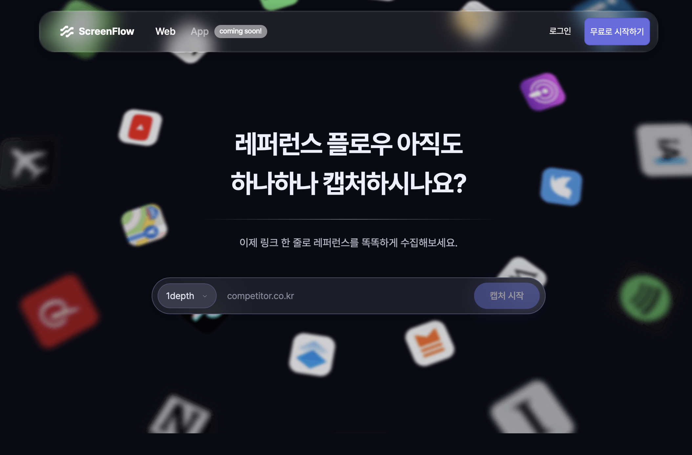

Snipit
리서치
경쟁사 메타 광고·레퍼런스를 AI가 알아서 모아주는 마케터·기획자용 도구. 막연한 한 줄만 던져도 됨.

Proby
리서치
AI가 사용자에게 꼬리질문까지 던지는 심층 인터뷰 도구. 다국어 인터뷰도 자동 번역·요약·페르소나 도출.

ScreenFlow
디자인 / UI
URL 하나 넣으면 웹사이트 전체 플로우를 자동 캡처. 피그마로 바로 복사할 수 있어 화면 설계가 빨라짐.
이미지 준비 중⚡
v0
디자인 / UI
프롬프트로 UI 컴포넌트를 바로 만들어주는 Vercel의 AI 도구. 와이어프레임 단계에서 특히 유용.
이미지 준비 중🔗
Make
자동화
앱 간 자동화 워크플로우. 구글시트 → 슬랙 알림 같은 반복 작업을 코드 없이 연결.
이미지 준비 중🔍
Perplexity
리서치
검색 + AI 답변이 합쳐진 리서치 도구. 출처가 달려있어서 사실 확인이 빠름.
이미지 준비 중📊
Gamma
프레젠테이션
프롬프트로 발표 자료를 만들어주는 도구. PPT 디자인 시간을 크게 줄여줌.
이미지 준비 중✍️
DeepL Write
글쓰기
영문 이메일·보고서 톤을 자연스럽게 다듬어주는 AI 교정 도구. 번역기보다 정확한 뉘앙스.
이미지 준비 중💻
Cursor
코딩
AI가 코드를 같이 짜주는 에디터. 비개발자도 간단한 자동화 스크립트 만들 때 유용.